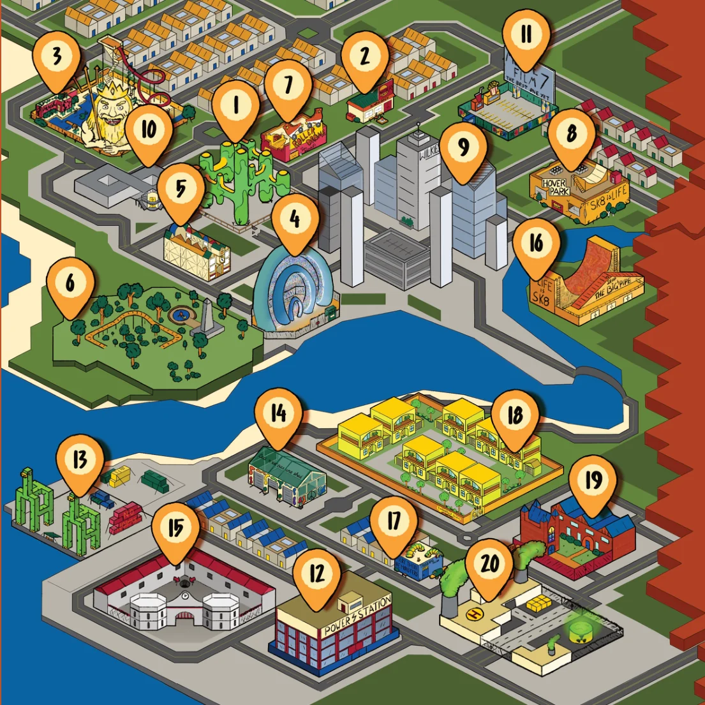

Eine seltsame kaktusartige „Statue“, die eines Tages auftauchte und seitdem endlos wächst – inzwischen das höchste Ding in Roob. Wer in ihre Nähe kommt, wird von außerirdischer Ruhe überflutet; deshalb wurde hier der Waffenstillstand geschlossen, der den Beef von ’23 beendete.
Ein Burgerladen an der Straße, Tag und Nacht geöffnet, geführt von der mütterlichen Auntie A.
Ein uralter, überwucherter Wasserpark rund um die Statue eines vergessenen Meeresgottes.
Ein riesiger Portalrahmen für interdimensionalen Handel und (wenn man reich genug ist) Reisen.
Seit Jahrzehnten verlassen, angeblich verflucht – heute Partyort. Stellt sich heraus: eine Dünnzone. Fragt bloß nicht Ian, woher er das weiß.
Einst das Zentrum des Seehandels, heute verfallen und voller Besetzerhäuser des FreeRoob-Kollektivs.